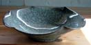
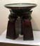
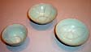
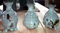
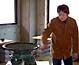
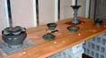
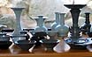

| Uraguchi Masayuki
Japanese Celadon Master.
Uraguchi
Masayuki was born in Tokyo, 1964. He studied ceramics at
the Tokyo National University of Fine Arts and Music learning the
secrets of celadon with Living National Treasure Miura Koheiji.
He established his kiln in 1991 and has since become on of the 'stars
of celadon' in Japan. Works have been shown at the Japan Ceramic
Art exhibition, Asahi Ceramic Art exhibition, and the Japanese Traditional
Arts and Crafts exhibition; all are juried exhibitions. One man
shows have been at Japan's most prestigious galleries including
Mitsukoshi, Takashimaya, Fujinoya, and Tenmaya, amongst others.


Uraguchi's forms run from the traditional to his own designs. Celadon
is widely considered to be one, if not the most, difficult of yakimono
to produce, as the glaze is fickle and the loss-rate per kiln is
incredibly high. However, celadon's deep and rare elegance is a
key reason why the Chinese emperors of old emphatically cherished
Seiji (celadon). Uraguchi's works not only exhibit a sharp sense
of form, his many experiments in glazes have produced new and unique
celadon glazes that are authentically Uraguchi's. Miruji, Kokusho,
Kokuyosai; his original Seiji is propelling the art of celadon into
new heights.
Text and images courtesy of Robert
Yellin, e-yakimono.net.
Related articles:
Uraguchi
Masayuki Celadon Exhibition
Interview
with Uraguchi Masayuki Interview and Exhibit Photo Tour
More Artists of the Week
More Articles
|
{kind=link}
{kind=link}
{kind=link}
{kind=link}
{kind=link}
{kind=link}
{kind=link}